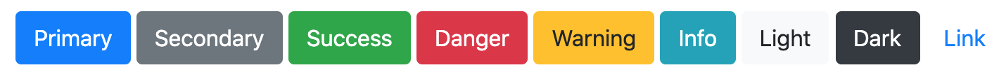

⛵️
Hoist the sails, we have TailwindCSS!
🛠
A utility-first CSS framework for rapidly building custom designs
Your captain: Elke Heymans
- 👩🏼💻 Frontend consultant
- 💻 VueJS developer
- 📸 Photography
- 🐦 @elkecodes
- 🌍 https://elke.codes/

👩🏼💻
CSS frameworks now
Most popular ones
- Bootstrap
- Foundation
- Materialize CSS
- Semantic UI
- Bulma
- ...
The classic example: a button component
<button class="btn btn-primary">Primary</button>
<button class="btn btn-secondary">Secondary</button>
<button class="btn btn-success">Success</button>
The result: pre-styled buttons!
Advantages of component frameworks
- Ideal for prototyping
- Ready to use
- Uniform styling
Disadvantages of component frameworks
<div class="card" style="width: 18rem;">
<img src="..." class="card-img-top" alt="...">
<div class="card-body">
<h5 class="card-title">Card title</h5>
<p class="card-text">Some quick example text to build on the card title and make up the bulk of the card's content.</p>
<a href="#" class="btn btn-primary">Go somewhere</a>
</div>
</div>- Opinionated predesigned components
- No specificity wars:
.card .card-body .card-title {
color: red !important;
}
🛠
TailwindCSS = utility classes
What are utility classes?
Small pre-existing CSS classes to be used directly in your HTML.
.mobile-only to add display: none
<button class="text-white bg-blue-500 underline rounded-lg px-4 py-2">Primary</button>Result:
<button style="
color: white;
background-color: #4299e1;
padding: 0.5rem 1rem;
border-radius: 0.5rem;
">Primary</button>
No more complex CSS
- Define how an element looks with utilities
- No CSS selectors needed
- Don't invent class names: .btn-pulsing, .btn-important, ...?
- No naming conventions like BEM needed
- Very descriptive: no CSS file to open
<button class="
text-white
font-bold
uppercase
text-right
bg-green-500
underline
rounded-lg
w-full
px-4
py-2
animate-pulse
">Primary</button>
Utility class exist for:
- Layout
- Flexbox
- Grid
- Box Alignment
- Spacing
- Sizing
- Typography
- Backgrounds
- Borders
- Tables
- Effects
- Transforms
- Interactivity
- SVG
- Screen Readers
- Transitions and animation
More to come!
Recreating the Bootstrap buttons
<button class="text-white bg-blue-500 px-4 py-2 rounded-lg">Primary</button>
<button class="text-white bg-gray-500 px-4 py-2 rounded-lg">Secondary</button>
<button class="text-white bg-green-500 px-4 py-2 rounded-lg">Success</button>
<button class="text-white bg-red-500 px-4 py-2 rounded-lg">Danger</button>
<button class="text-gray-700 bg-yellow-500 px-4 py-2 rounded-lg">Warning</button>
<button class="text-white bg-teal-600 px-4 py-2 rounded-lg">Info</button>
<button class="text-gray-700 bg-gray-200 px-4 py-2 rounded-lg">Light</button>
<button class="text-white bg-gray-800 px-4 py-2 rounded-lg">Dark</button>
<button class="text-blue-700 bg-transparent px-4 py-2 rounded-lg">Link</button>
😾
Addressing the criticism
1: Look at all that repetition!
Example: you have the same button styling multiple times
<!-- some HTML-->
<button class="text-white bg-gray-500 px-4 py-2 rounded-lg">Secondary</button>
<!-- some more HTML-->
<button class="text-white bg-gray-500 px-4 py-2 rounded-lg">Secondary</button>
Why is it not a component in Vue/React/...?
SecondaryButton.vue:
<template>
<button class="text-white bg-gray-500 px-4 py-2 rounded-lg"><slot /></button>
</template>
<script>
export default {
// your button functionality here
}
</script>
- Bundle all stylings together per component
- Useful for complex components
The power of @apply
For example when you like .btn-secondary
<button class="text-white bg-gray-500 px-4 py-2 rounded-lg">Secondary</button>- Extract component styles
-
Keep using the utility classes:
text-white bg-gray-500 px-4 py-2 rounded-lg
<button class="btn-secondary">Secondary</button>
<style>
.btn-secondary {
@apply text-white bg-gray-500 px-4 py-2 rounded-lg;
}
</style>
2: It's just like inline styles!
Inline styles !== inline utility classes
<button class="text-white bg-blue-500 px-4 py-2 rounded-lg">Primary</button>
↪ Utility classes = no hardcoded values, customisable!
<button style="
color: white;
background-color: #4299e1;
padding: 0.5rem 1rem;
border-radius: 0.5rem;
">Primary</button>
↪ What if we want a different shade of blue?
↪ A different padding?
↪ A different border-radius?
✏️
Customisation of TailwindCSS
How does it work?
tailwind.css + configuration file
⬇ via TailwindCLI ⬇
custom.css
npx tailwindcss build tailwind.css -o custom.cssHow do you customise?
const { colors } = require('tailwindcss/defaultTheme')
module.exports = {
theme: {
extend: {
colors: {
blue: {
...colors.blue,
'500': '#1e3656',
}
}
}
}
}With .bg-blue-500 utility: vs.
🖥
Responsiveness
With utility classes?
4 breakpoints defined:
- sm (Small): min-width 640px
- md (Medium): min-width: 768px
- lg (Large): min-width: 1024px
- xl (Extra Large): min-width: 1280px
Prefix your utilities with sm:, md:, lg:, xl:
An example
<button class="
text-blue-500
md:text-white
bg-white
md:bg-blue-500
lg:bg-purple-500
md:underline
lg:no-underline
lg:uppercase
rounded-lg
px-4 py-2
">Primary</button>🧪
Want to try it out?
Try it out with the CDN:
<link href="https://unpkg.com/tailwindcss@^1.0/dist/tailwind.min.css" rel="stylesheet">- NPM package
- Tailwind CLI
npx tailwindcss build tailwind.css -o custom.css🏁
Conclusion
- Using utilities = vocalising how it looks
- Reponsiveness built in, no more media queries
- Customisation
Still sceptical? https://adamwathan.me/css-utility-classes-and-separation-of-concerns/
More info: https://tailwindcss.com/
Good luck sailor with TailwindCSS!